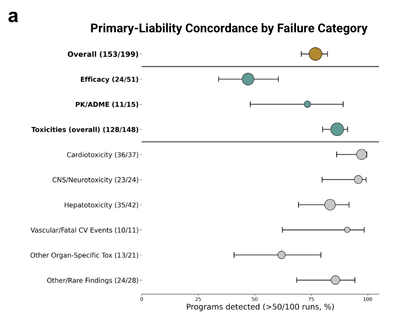
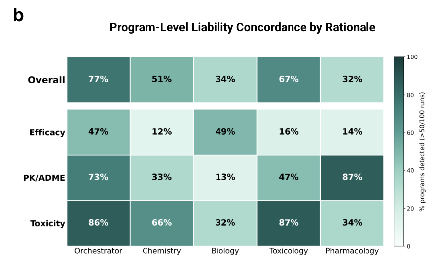
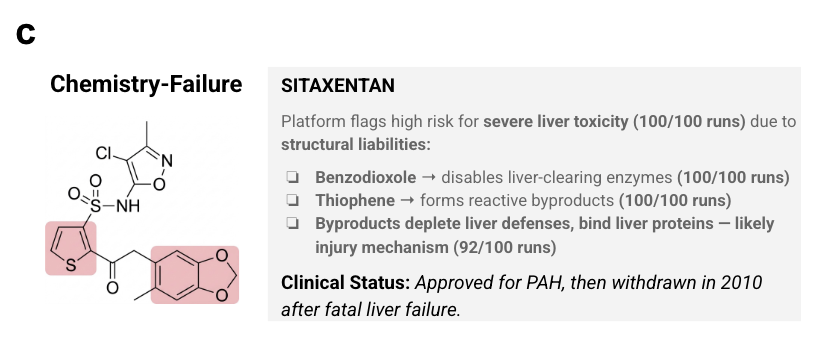
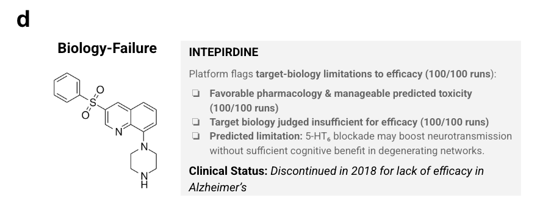

Being Right Is Not Enough. You Have to Be Right for the Right Reason.
Post 5 of 8 on SAISHO’s clinical-outcomes prediction model.
A model that assigns high risk to drugs that failed, but for reasons unrelated to why they failed, has learned something. It has just not learned the thing you would act on.
Predicting failure is half the job. The half that changes a decision is what kind of failure. A chemical liability invites redesign. An exposure problem invites a different route or dosing strategy. A biological limitation invites a different indication, or abandoning the target. Those are three completely different Mondays, and a scalar cannot distinguish them.
So we tested it directly.
How You Measure This Without Fooling Yourself
For all 199 failed or withdrawn programs, one of the authors curated the documented reasons for discontinuation from the public record, before looking at any SAISHO output. Programs can have more than one documented reason. The reasons were separated, assigned to eight liability categories, and deduplicated within program and category. Categories with fewer than ten programs were folded into mechanistically related ones.
All SAISHO reports were finalized under the leakage-control protocol before any comparison happened.
Then two distinct measures, both defined over the 100 independent runs per program:
Primary-Liability Concordance is positive when the reconciled assessment prioritized a documented liability as the program's primary concern in more than 50 of 100 runs.
Cross-Domain Liability Detection is positive when at least one of the four domain specialists identified a documented liability, again in more than 50 of 100 runs.
The distinction is real and worth an example. Suppose cardiotoxicity was the documented reason a program died. One specialist flags it in 60 runs, but the reconciled report prioritizes it in only
30. That program is positive for Cross-Domain Detection and negative for Primary-Liability
Concordance. Somebody in the room saw it; the room did not act on it.
Only the top-level prioritized rationale was analyzed. Lower-priority findings buried elsewhere in the assessment do not count, which is the strict reading and the one I would want applied to someone else's system.
The Result

The reconciled rationale matched a documented failure liability in 153 of 199 programs, 77%, with a 95% confidence interval of 71 to 82%. Cross-Domain Detection extends that to 165 of 199, 83%.
So in more than three quarters of failed programs, the system prioritized a liability from the same category that was actually reported as contributing to discontinuation, and the full specialist panel found a corresponding liability in more than four fifths.
The category breakdown is where it gets honest.
Toxicity is strong: 128 of 148 overall, and within it cardiotoxicity at 36 of 37, CNS and neurotoxicity at 23 of 24, hepatotoxicity at 35 of 42. PK/ADME is 11 of 15, on a small enough denominator that the confidence interval is wide.
Efficacy is 24 of 51. That is 47%, and it is the weakest number in the paper.
Why Efficacy Is Hard, and Why I Am Not Explaining It Away
Efficacy accounts for roughly half of all Phase 2 and Phase 3 failures industry-wide. It is the single largest failure mode and we catch it least well. That is a real limitation, not a rounding error.
Some of the gap is definitional. "Lack of efficacy" in a press release does not mean the drug was biologically inert. It can mean the benefit was real but too small, or that exposure was inadequate, or that dosing was capped by toxicity before it reached a therapeutic level. Efficacy and safety failures overlap, and the public record frequently does not resolve which one was operating. Some of our misses may be category assignment rather than missed signal, and there is no clean way to separate those.
But some of it is genuinely hard. Predicting that a target will not deliver clinical benefit, from structure, mechanism and indication alone, means predicting the behaviour of a pathway in a diseased human system. Identifying a relevant liability in about half of those programs using only three inputs is, I think, encouraging rather than impressive. The way forward is more inputs (target engagement data, adaptive resistance, patient selection) rather than better prompting, and that is a roadmap item, not a result.
No Single Specialist Is Good Enough

Read this heatmap column by column and the argument for the architecture writes itself.
Toxicology is the best single source for toxicity failures at 87%. Pharmacology dominates PK/ADME at 87%. Biology leads on efficacy at 49%, and 49% is the best any single domain achieves there.
Now read the rows. No specialist is good across the board. Toxicology sees 16% of efficacy failures. Pharmacology sees 14%. Biology sees 13% of PK/ADME failures. Each one is excellent inside its lane and close to blind outside it, which is exactly what you would expect, because that is what specialization means.
The orchestrator column is 77%, 47%, 73%, 86%. It is not the best in any single row except overall. It is the only column that is never catastrophic.
That is the whole thesis in one grid. The system is not smarter than its specialists. It has fewer blind spots than any of them.
Two Drugs, Same Score, Opposite Decisions

Sitaxentan, an endothelin receptor antagonist, was withdrawn after severe and sometimes fatal liver injury. Median Clinical Risk Score 72. SAISHO identified benzodioxole bioactivation to a reactive ortho-quinone and time-dependent CYP3A4 inhibition as the dominant liabilities, recurring at 100 of 100 runs. Those predictions are consistent with published experimental work on sitaxentan bioactivation in human liver microsomes and hepatocytes.

Intepirdine, a 5-HT6 receptor antagonist, failed Phase 3 in Alzheimer's disease. Median Clinical Risk Score 81. SAISHO judged the pharmacology favorable and the predicted toxicity manageable, and flagged instead that indirect neurotransmitter modulation would provide insufficient clinical benefit in established neurodegeneration.
Two comparably high scores. Completely different implications.
Sitaxentan points at a structural and metabolic liability. That is a medicinal chemistry problem, and it is potentially solvable: replace the motif, kill the bioactivation, keep the pharmacology.
Intepirdine points at a target that is not going to deliver. No amount of chemical optimization fixes that. The response is a different target, a combination strategy, or a different disease.
If you reported both as "81 and 72, high risk", you would have destroyed the only information that tells a team what to do next.
What This Does Not Show
Concordance is not causation. Clinical discontinuation is usually multifactorial, and public reports are often incomplete or strategically worded. Matching a documented liability means SAISHO surfaced a clinically relevant hypothesis that agrees with the record. It does not establish that this was the exclusive cause, and it does not promise that fixing it would have saved the program.
The matching is also automated. An ontology searches the prioritized rationales, handling concept direction and local negation, and counts only affirmative liability statements. That is reproducible and it is not blinded human adjudication. The ontology and category assignments were developed iteratively during the analysis rather than preregistered, which is a real methodological weakness and is stated as one in the paper.
What these outputs generate is testable hypotheses for experimental follow-up and portfolio review. That is a useful thing to generate. It is not a causal claim.
Next week: the ablation, and how much of this is the architecture versus the model underneath it.
More on the platform at saisho.ai.